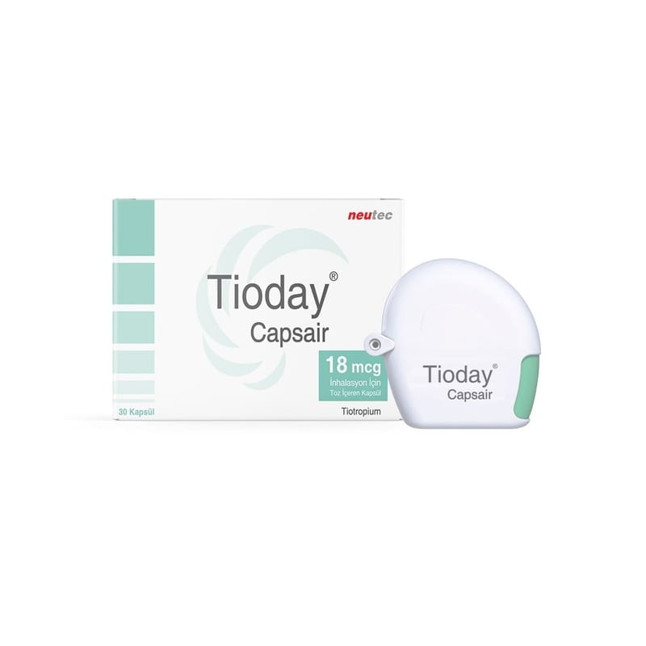

Tioday Capsair 18 mcg İnhalasyon İçin Toz İçeren Kapsül, 120 Adet

Ne için kullanılır
KT · Bölüm 1 TİODAY, ağızdan soluyarak (inhalasyon yoluyla) kullanıma uygun, toz zerrecikleri halinde tiotropium bromür anhidrus içerir.
TİODAY, 30, 60 veya 120 inhaler kapsül içeren blister ambalajlarda inhalasyon cihazı ile birlikte piyasaya sunulmaktadır.
Tiotropium, klinik tıpta genellikle antikolinerjik olarak adlandırılan, uzun etkili özgün bir bronş genişletici (bronkodilatör) ajandır. Hava yollarınızın açılmasına yardımcı olur ve havanın ciğerlerinize girip çıkmasını kolaylaştırır.
TİODAY, kronik obstrüktif (tıkayıcı) akciğer hastalığı (KOAH) olan kişilerin daha rahat nefes alıp vermelerinde yardımcı olur. KOAH, nefes darlığına ve öksürüğe sebep olan, uzun dönemli bir akciğer hastalığıdır. KOAH terimi, kronik bronşit ve amfizem hastalıklarıyla ilişkili bir tablo anlamında kullanılmaktadır. KOAH uzun dönemli bir hastalık olduğu için, TİODAY’i, sadece nefes alıp vermede problemleriniz olduğunda veya KOAH’ın diğer belirtileri ortaya çıktığında değil, her gün düzenli olarak kullanmalısınız.
TİODAY’in düzenli olarak kullanılması aynı zamanda, hastalığınıza bağlı olarak, uzun süreli nefes darlığı ortaya çıkan dönemlerde de yararlı olur. Sizin daha uzun süreyle aktif olmanıza yardımcı olur. Günlük TİODAY kullanımı ayrıca, KOAH belirtilerinizde birkaç gün sürebilen kısa dönemli kötüleşmelerin (alevlenme/atak) engellenmesinde de yardımcıdır.
TİODAY solunum yoluyla uygulandığında, bölgesel olarak bronşlar üzerinde seçici bir etki gösterir. Tiotropium solunduktan sonra bronşlarda görülen genişleme, esas olarak bölgeye özgü (havayolları üzerinde) bir etki olup, tüm vücudu ilgilendiren (sistemik) bir etki değildir.
TİODAY orta ve ağır KOAH (kronik obstrüktif akciğer hastalığı) olgularında düzenli kullanıldığında atak sıklığını azaltmakta, hastalık belirtilerini ve yaşam kalitesini düzeltebilmektedir.
Bu ilacın etkisi 24 saat sürelidir, dolayısıyla günde sadece bir kez kullanmanız yeterlidir. TİODAY’in doğru bir şekilde kullanılması konusunda lütfen “3. TİODAY nasıl kullanılır?” bölümüne ve inhalasyon cihazı kullanım talimatlarına bakınız.